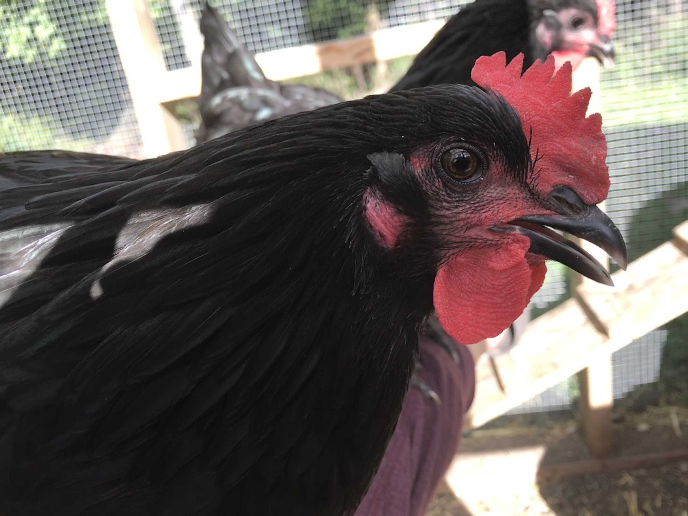

<div class="card-container">
  <mat-card class="card-container_item" *ngFor="let breed of breedsToDisplay; let i=index;">
    <mat-card-header>
      <mat-card-title>{{ breed.breed }}</mat-card-title>
      <mat-card-subtitle>

      </mat-card-subtitle>
    </mat-card-header>
    
    <mat-dialog-content>
      <p>
        <button mat-stroked-button (click)="openBreedDetailsDialog(breed)">More Details</button>
      </p>
      <p *ngIf="breed.purpose">
        <b>Purpose: </b>
        <ng-container *ngFor="let breedPurpose of convertBreedData.convertPurpose(breed.purpose); last as isLast">
          <button mat-button-flat (click)="openBreedPurposeDetailsDialog(breedPurpose)">{{breedPurpose}}</button>
        </ng-container>
      </p>
      <p *ngIf="breed.apaClass">
        <b>APA Class: </b><button mat-button-flat (click)="openApaClassDetailsDialog(breed.apaClass.name)">{{breed.apaClass.name}}</button>
      </p>
    </mat-dialog-content>
    <mat-card-actions>
      <button *ngIf="!userFavoriteBreeds.includes(breed._id)" mat-icon-button (click)="addBreedToUserFavorites(breed)"
        aria-label="add this breed to your favorites">
        <mat-icon>favorite_border</mat-icon>
      </button>
      <button *ngIf="userFavoriteBreeds.includes(breed._id)" mat-icon-button (click)="removeBreedFromUserFavorites(breed)"
        aria-label="remove this breed to your favorites">
        <mat-icon>favorite</mat-icon>
      </button>
    </mat-card-actions>
  </mat-card>

</div>